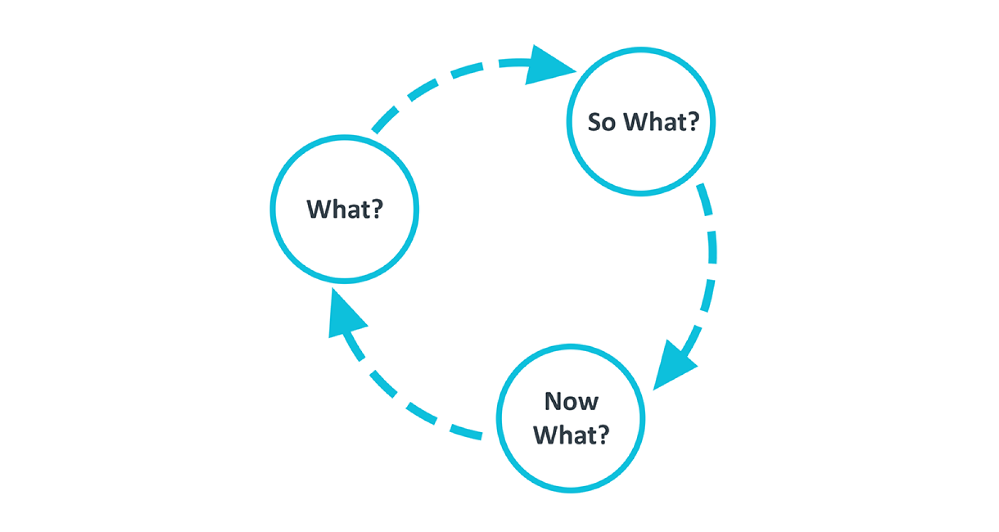

Blog 6 | New toolkit reflection - What? So what? Now what?
Design 302 | Date: 04/09/24 (Thursday)
So far, within this semester, I have only used the four Fs as my reflection structure, following the toolkit to help allow for active reflection. And so I wanted to change my reflection structure, to try something new and to see if I like it, my next few blog posts will follow the “What? So what? Now what?” reflection structure.
Within this blog, I will look into this structure and how it works, then reflect on it using the same structure.
The “What? So what? Now what?” framework looks into three stages, which are split up within its experience, implications and what this then means for the future.
In the “What?” section, this will look into the situation, the facts and feelings of it. Looked into what is the context, the outcome, what was the good and bad, and what was my role in this situation.
In the “So what?” section, will look into implementing my own knowledge and thoughts as well as others and then connecting them with the situation in the previous section. Look into what this experience tells me about myself, what I think about when I was in this situation, what would have happened if I had done something different, and can I use other ideas and models to help understand more about the situation.
In the “Now what?” section, we will look into the future, focusing on what to do, how this will be done, and how I would remind myself to actually implement this. What would be my new action, and how will I make sure to follow through with this?
Figure 1.
A graph of the “What? So what? Now what?” framework

Note. A graphic that showcases the “What? So what? Now what?” framework and how it works as a cycle. Copyright 2001 by Gary Rolfe.
What? So what? Now what?
What?
For the past six weeks, the first half of this semester, I have been actively reflecting on my 301 on my blog, using the Four Fs framework to reflect. However, there are many different models that can also be used, and so I wanted to look into a new framework to utilise and test for the second half of the semester or until I wanted to change my chosen framework later on.
I had chosen the “What? So what? Now what?” framework to look into and am now currently reflecting on it and what I have learnt about it.
So what?
I found this new framework of “What? So what? Now what?” to be very similar to the Four Fs that I have been using previously. It only leaves out an extra phase and connects both the facts and feelings phases of the Four Fs into one phase of “What?”. This could potentially mean that I will lack the focus on either feelings or facts as I combine the two together. I found the Four Fs had helped me focus on my feelings about the situations, as when I have typically reflected on the past, I wouldn’t think about my feelings or what I felt as I went through my design work.
This could mean that the new framework of “What? So what? Now what?” could not be as effective for me in terms of ensuring my feelings are added to the reflection.
Now what?
I will now start to use the “What? So what? Now what?” framework within my blog posts to test and learn about how I feel about this framework if I find it more effective or more enjoyable to use. I will ensure that, at a minimum, I will use this framework for at least the next three blog posts to use it fully multiple times. I will, at a minimum, make blog posts every week, making it around three weeks I will use this framework. However, I do want to reflect more often, so I wanted to count based on the number of blog posts rather than the length of time, as the amount of blog posts can fluctuate on a week-by-week basis.
If I don't like this framework, I can change it and choose another framework to use within my blog posts.
References
Greenaway, R. (n.d.).The Active Reviewing Cycle.
https://reviewing.co.uk/learning-cycle/
J, D. (1994). Reflective practice for practise.PubMed, 14 47–50.
https://pubmed.ncbi.nlm.nih.gov/8303152
Karsten, E., & Borton, T. (1971). Reach, touch, and teach: Student Concerns and Process education. The English Journal, 60(5), 652.
https://doi.org/10.2307/813086
Rolfe, G., Freshwater, D., & Jasper, M. (2001). Critical Reflection for Nursing and the Helping Professions: A User’s Guide. Palgrave MacMillan.
The four F’s of active reviewing. (2018, November 5). The University of Edinburgh.
https://www.ed.ac.uk/reflection/reflectors-toolkit/reflecting-on-experience/four-f
What? So what? Now what? (2020, January 30). The University of Edinburgh.
https://www.ed.ac.uk/reflection/reflectors-toolkit/reflecting-on-experience/what-so-what-now-what